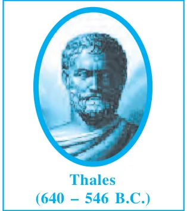
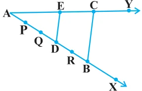
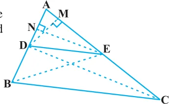
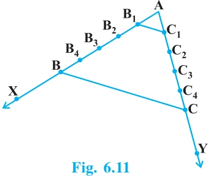
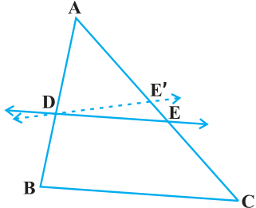
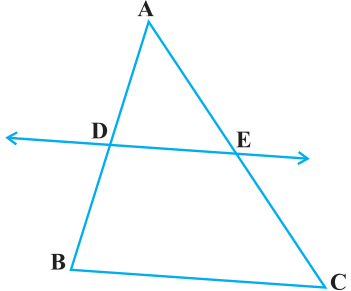
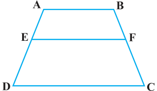
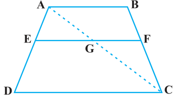
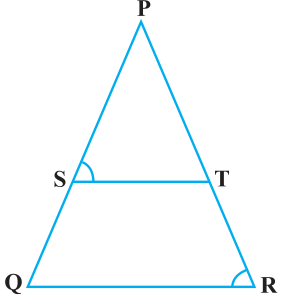

Similarity of Triangles
You may recall that triangle is also a polygon. So, we can state the same conditions for the similarity of two triangles. That is: Two triangles are similiar, if
- (i)their corresponding angles are equal and
- (ii)their corresponding sides are in the same ratio (or proportion).
Note that if corresponding angles of two triangles are equal, then they are known as equiangular triangles. A famous Greek mathematician Thales gave an important truth relating to two equiangular triangles which is as follows: The ratio of any two corresponding sides in two equiangular triangles is always the same. It is believed that he had used a result called the Basic Proportionality Theorem (now known as the Thales Theorem) for the same. To understand the Basic Proportionality Theorem, let us perform the following activity:

Activity 2 : Draw any angle XAY and on its one arm AX, mark points (say five points) P, Q, D, R and B such that \(AP = PQ = QD = DR = RB\). Now, through B, draw any line intersecting arm AY at C (see Fig. 6.9). Also, through the point D, draw a line parallel to BC to intersect AC at E. Do you observe from

your constructions that \(\frac{AD}{DB} = \frac{3}{2}\) ? Measure AE and EC. What about \(\frac{AE}{EC}\) ? Observe that \(\frac{AE}{EC}\) is also equal to \(\frac{3}{2}\) . Thus, you can see that in \(\triangle ABC\), DE || BC and \(\frac{AD}{DB} = \frac{AE}{EC}\) . Is it a coincidence? No, it is due to the following theorem (known as the Basic Proportionality Theorem):
Theorem 6.1 : If a line is drawn parallel to one side of a triangle to intersect the other two sides in distinct points, the other two sides are divided in the same ratio. Proof : We are given a triangle ABC in which a line parallel to side BC intersects other two sides AB and AC at D and E respectively (see Fig. 6.10).

We need to prove that \(\frac{AD}{DB} = \frac{AE}{EC}\) . Let us join BE and CD and then draw \(DM \perp AC\) and \(EN \perp AB\). Fig. 6.10
Now, area of \(\triangle ADE (= \frac{1}{2}\) base \(\times\) height) \(= \frac{1}{2} AD \times EN\). Recall from Class IX, that area of \(\triangle ADE\) is denoted as ar(ADE).
So, ar(ADE) \(= \frac{1}{2} AD \times EN\)
Similarly, ar(BDE) \(= \frac{1}{2} DB \times EN\),
ar(ADE) \(= \frac{1}{2} AE \times DM\) and ar(DEC) \(= \frac{1}{2} EC \times DM\).
Therefore, \(\frac{ar(ADE)}{ar(BDE)} = \frac{1}{2} \frac{1}{2} AD \times ENDB \times EN = \frac{AD}{DB} (1)\)
and \(\frac{ar(ADE)}{ar(DEC)} = \frac{1}{2} \frac{1}{2} AE \times DMEC \times DM = \frac{AE}{EC} (2)\) Note that \(\triangle BDE\) and DEC are on the same base DE and between the same parallels BC and DE.
So, ar(BDE) = ar(DEC) (3)
Therefore, from (1), (2) and (3), we have :
\(\frac{AD}{DB} = \frac{AE}{EC}\)
Is the converse of this theorem also true (For the meaning of converse, see Appendix 1)? To examine this, let us perform the following activity:
Activity 3 : Draw an angle XAY on your notebook and on ray AX, mark points B_{1}, B_{2}, B_{3}, B_{4}and B such that \(AB_{1} = B_{1}B_{2} = B_{2}B_{3} =\)

\(B_{3}B_{4} = B_{4}B\).
Similarly, on ray AY, mark points C_{1}, C_{2}, C_{3}, C_{4} and C such that \(AC_{1} = C_{1}C_{2} = C_{2}C_{3} = C_{3}C_{4} = C_{4}C\). Then join B_{1}C_{1} and BC (see Fig. 6.11).
Note that \(\frac{AB1}{B B}\) \(_{1} = \frac{AC1}{C C}\) _{1} (Each equal to \(\frac{1}{4}\) )
You can also see that lines B_{1}C_{1} and BC are parallel to each other, i.e.,
B_{1}C_{1} || BC (1)
Similarly, by joining B_{2}C_{2}, B_{3}C_{3} and B_{4}C_{4}, you can see that:
\(\frac{AB2}{BB} _{2} = \frac{AC2}{CC} _{2} = \frac{2}{3}\) and B_{2}C_{2} || BC (2)
\(\frac{AB3}{BB} _{3} = \frac{AC3}{CC} _{3} = \frac{3}{2}\) and B_{3}C_{3} || BC (3)
\(\frac{AB4}{BB} _{4} = \frac{AC4}{CC} _{4} = \frac{4}{1}\) and B_{4}C_{4} || BC (4)
From (1), (2), (3) and (4), it can be observed that if a line divides two sides of a triangle in the same ratio, then the line is parallel to the third side. You can repeat this activity by drawing any angle XAY of different measure and taking any number of equal parts on arms AX and AY . Each time, you will arrive at the same result. Thus, we obtain the following theorem, which is the converse of Theorem 6.1:
Theorem 6.2 : If a line divides any two sides of a triangle in the same ratio, then the line is parallel to the third side. This theorem can be proved by taking a line DE such

that \(\frac{AD}{DB} = \frac{AE}{EC}\) and assuming that DE is not parallel to BC (see Fig. 6.12). If DE is not parallel to BC, draw a line DE ' parallel to BC. Fig. 6.12 So, (AD)/(DB = (AE ' }{E C ' } (Why ?)
Therefore, (AE)/(EC = (AE ' }{E C ' } (Why ?) Adding 1 to both sides of above, you can see that E and E ' must coincide. (Why ?)
Let us take some examples to illustrate the use of the above theorems. Example 1 : If a line intersects sides AB and AC of \(a \triangle ABC\) at D and E respectively and is parallel to BC, prove that \(\frac{AD}{AB} = \frac{AE}{AC}\) (see Fig. 6.13). Solution : DE || BC (Given)
So, \(\frac{AD}{DB} = \frac{AE}{EC}\) (Theorem 6.1)

or, \(\frac{DB}{AD} = \frac{EC}{AE}\)
or, \(\frac{DB}{AD} + 1 = \frac{EC}{AE} + 1\)
or, \(\frac{AB}{AD} = \frac{AC}{AE}\)
So, \(\frac{AD}{AB} = \frac{AE}{AC}\) Fig. 6.13
Example 2 : ABCD is a trapezium with AB || DC. E and F are points on non-parallel sides AD and BC respectively such that EF is parallel to AB

(see Fig. 6.14). Show that \(\frac{AE}{ED} = \frac{BF}{FC}\) .
Solution : Let us join AC to intersect EF at G (see Fig. 6.15). Fig. 6.14 AB || DC and EF || AB (Given)
So, EF || DC (Lines parallel to the same line are parallel to each other)

Now, in \(\triangle ADC\), EG || DC (As EF || DC)
So, \(\frac{AE}{ED} = \frac{AG}{GC}\) (Theorem 6.1) (1) Similarly, from \(\triangle CAB\),
\(\frac{CG}{AG} = \frac{CF}{BF}\)
i.e., \(\frac{AG}{GC} = \frac{BF}{FC} (2)\)

Therefore, from (1) and (2),
\(\frac{AE}{ED} = \frac{BF}{FC}\)
Example 3 : In Fig. 6.16, \(\frac{PS}{SQ} = \frac{PT}{TR}\) and \(\angle PST = \angle PRQ\). Prove that PQR is an isosceles triangle.
Solution : It is given that \(\frac{PS}{SQ} = \frac{PT}{TR} \cdot\) Fig. 6.16 So, ST || QR (Theorem 6.2) Therefore, \(\angle PST = \angle PQR\) (Corresponding angles) (1)
Also, it is given that
\(\angle PST = \angle PRQ (2)\)
So, \(\angle PRQ = \angle PQR\) [From (1) and (2)] Therefore, \(PQ = PR\) (Sides opposite the equal angles) i.e., PQR is an isosceles triangle.